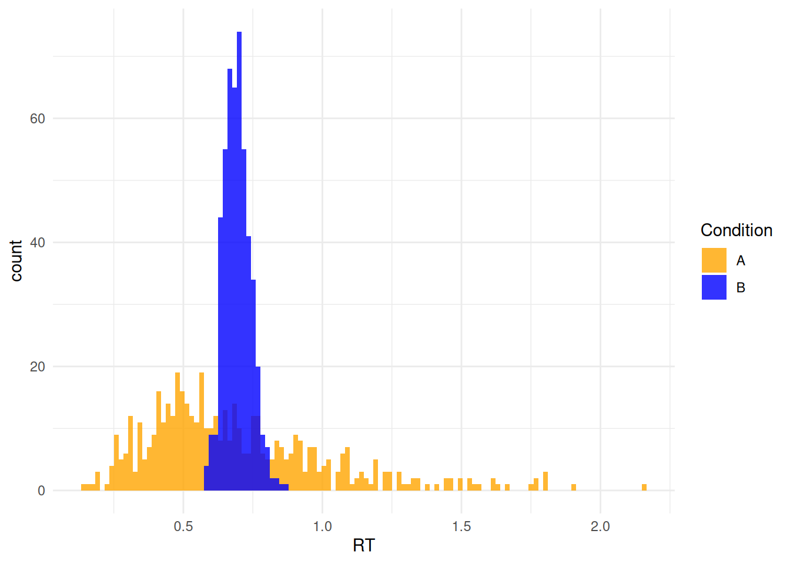
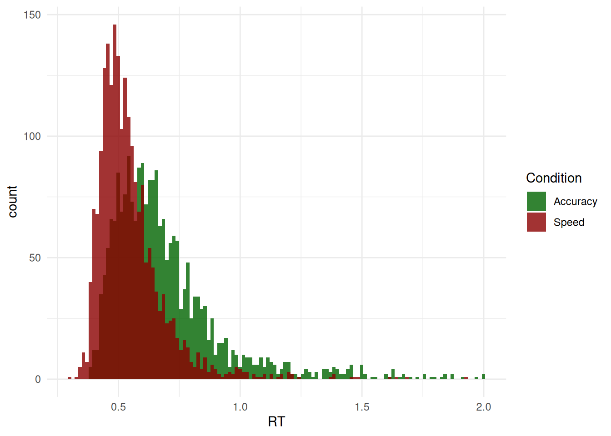
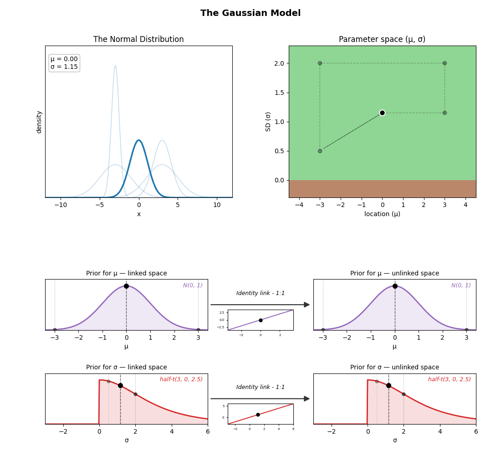
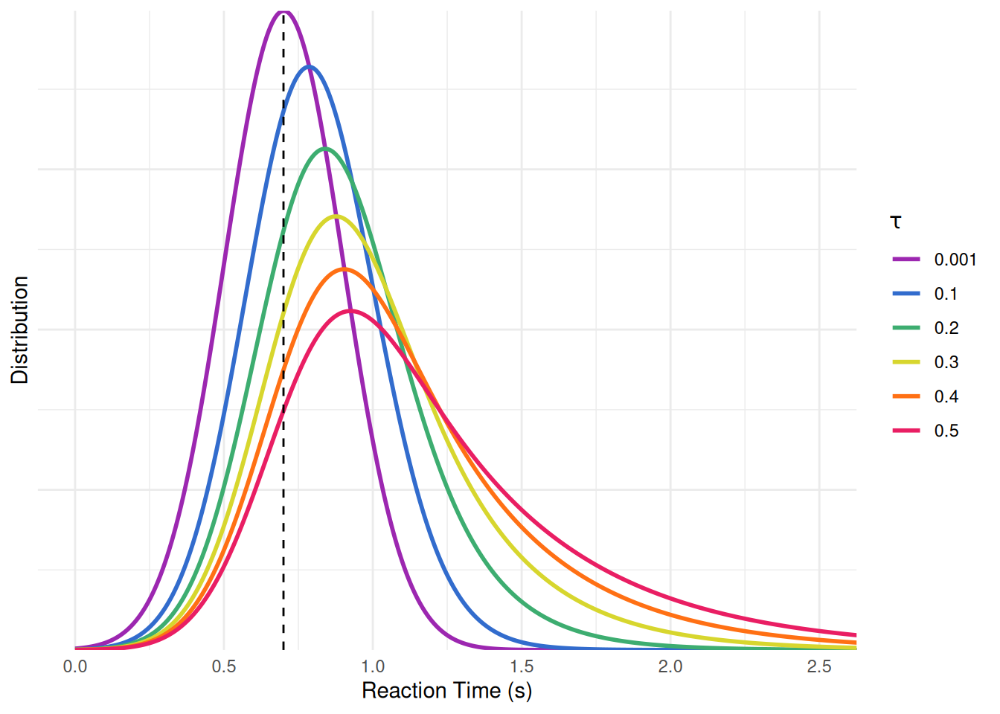
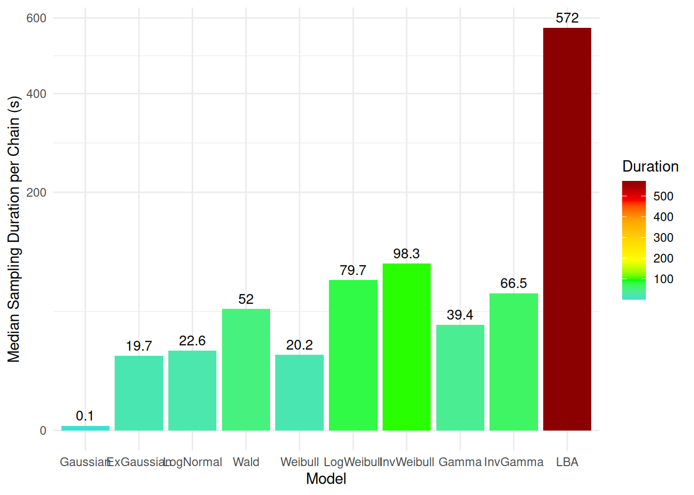
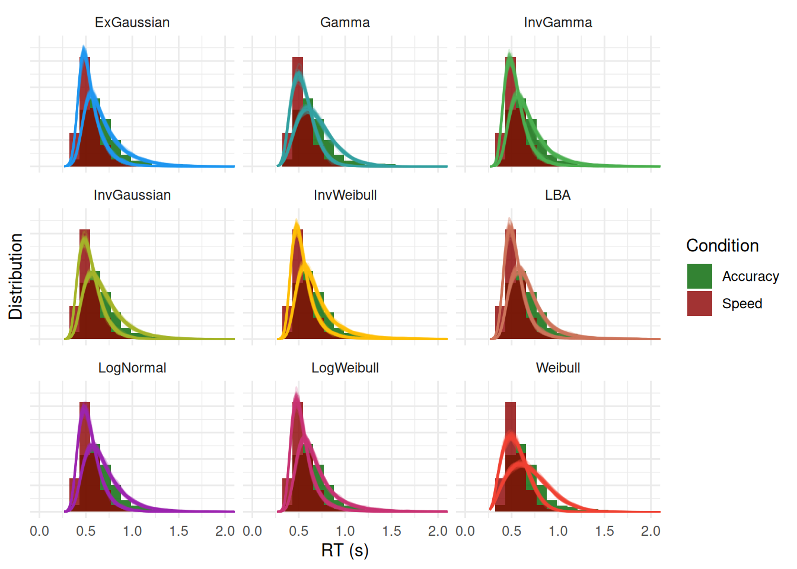

Why Linear Models are bad for RTs
After months of effort designing the study, recruiting participants and collecting data, you finally get your hands on that dataset and decide to check whether your super duper Nobel-prize-worthy experimental condition has an effect on reaction times. You do what everybody does, and what has always been done: fit a (mixed) linear model.
Code
set.seed(5)
n_participants <- 20
n_trials <- 25 # Per condition
# Participants differ in their overall speed
participants <- data.frame(
Participant = sprintf("S%02d", 1:n_participants),
Offset = rnorm(n_participants, mean = 0, sd = 0.03)
)
sim <- data.frame(
Participant = rep(participants$Participant, each = 2 * n_trials),
Condition = rep(rep(c("A", "B"), each = n_trials), n_participants)
)
sim$Offset <- participants$Offset[match(sim$Participant, participants$Participant)]
n <- sum(sim$Condition == "A")
sim$RT <- NA
# Wide distribution, very short time-to-first-response (tau = 0.05)
sim$RT[sim$Condition == "A"] <- 0.05 + sim$Offset[sim$Condition == "A"] +
rlnorm(n, meanlog = log(0.65) - 0.5^2 / 2, sdlog = 0.5)
# Narrow distribution, long non-decision time (tau = 0.45)
sim$RT[sim$Condition == "B"] <- 0.45 + sim$Offset[sim$Condition == "B"] +
rlnorm(n, meanlog = log(0.25) - 0.15^2 / 2, sdlog = 0.15)
library(lme4)
model <- lmer(RT ~ Condition + (1 | Participant), data = sim)
parameters(model)
#> # Fixed Effects
#>
#> Parameter | Coefficient | SE | 95% CI | t(996) | p
#> --------------------------------------------------------------------
#> (Intercept) | 0.69 | 0.01 | [ 0.67, 0.72] | 59.34 | < .001
#> Condition [B] | -1.20e-03 | 0.01 | [-0.03, 0.03] | -0.08 | 0.936
#>
#> # Random Effects
#>
#> Parameter | Coefficient
#> -----------------------------------------
#> SD (Intercept: Participant) | 0.02
#> SD (Residual) | 0.24Nothing. NOTHING 😭
The effect of Condition B vs. Condition A is minuscule and and non-significant. Months of work, and the only conclusion you can write down is “the condition had no effect on response times”. As you contemplate the ruins of your Nobel-prize aspirations, you start seriously considering abandoning your dreams of a career in academia and retraining as a goat farmer.
But then, as a last sanity check, you decide to actually look at the data.
ggplot(sim, aes(x = RT, fill = Condition)) +
geom_histogram(bins = 120, alpha = 0.8, position = "identity") +
scale_fill_manual(values = c("orange", "blue")) +
theme_minimal()
Shock and horror!
The two distributions could hardly look more different! Condition A has responses starting almost immediately (some as fast as 150 ms) and a long tail stretching past 2 seconds. Condition B has no responses at all before ~600 ms, and then a tight, narrow bump. One condition looks like fast, variable, possibly impulsive responding; the other looks like a slow but highly consistent process with a long “dead time” before any response can be emitted. These are, by any reasonable standard, two dramatically different behaviours.
How come the test did not capture any of it? Because we simulated these two distributions to have exactly the same mean - and the mean is the only thing the linear model was ever looking at. Everything that distinguishes these conditions - where the distribution starts, how wide it is, how heavy its tail is - was invisible to it by construction.
The lesson is not that the linear model lied: it faithfully answered the question it was asked. The problem is that “is the mean RT different?” is almost never the question we actually care about. Fortunately, better models exist - models that describe the shape of the RT distribution with parameters that can be mapped onto meaningful cognitive quantities. The rest of this vignette is about them.
“But I read that I can transform my data to make it more normal, should I do it?”
Log-transforming (or inverse-transforming, or Box-Cox-ing) RTs is a very common attempt at rescuing the linear model: make the data look Gaussian, then proceed as usual. It is, however, not a good idea (Schramm & Rouder, 2019). Transformations do not merely “fix” the distribution, they silently change the quantity being tested: the model no longer compares mean RTs but means of transformed RTs, which do not back-transform to anything you meant to ask about, and which can reverse, create or hide effects relative to the untransformed scale. Worse, they do nothing about the underlying problem illustrated above - a difference in shift, in spread or in tail weight is still squeezed into a single location parameter.
What one should do instead is use a model that is appropriate for the shape of the data and - ideally - for its data generating process. That distinction matters if you want to push the boundaries of what we can learn from your data. Some of the families below (ExGaussian, Weibull, Gamma…) are essentially descriptive: they are flexible enough to fit the shape of RT distributions well, but their parameters have no guaranteed correspondence to cognitive mechanisms. Others (Wald / Wiener, LBA, DDM) are generative: they are derived from an explicit account of how a decision unfolds over time - evidence accumulating towards a threshold - so their parameters (drift rate, boundary separation, non-decision time) are meant to refer to actual components of the process. Both are large improvements over the Gaussian, but the latter allows for potentially stronger and more interpretable claims.
Useful references to start:
- Lindelov’s overview of RT models: An absolute must-read.
- De Boeck & Jeon (2019): A paper providing an overview of RT models.
The Data
For this chapter, we will be using the data from Wagenmakers et al., (2008) - Experiment 1 also reanalyzed by Heathcote & Love (2012), that contains responses and response times for several participants in two conditions (where instructions emphasized either speed or accuracy). This dataset is bundled directly with cogmod as wagenmakers2008. Using the same procedure as the authors, we excluded all trials with uninterpretable response time, i.e., responses that are too fast (<200 ms instead of <180 ms) or too slow (>2 sec instead of >3 sec).
set.seed(123) # For reproducibility
df <- cogmod::wagenmakers2008
df <- df[df$RT > 0.2 & df$Participant %in% c(1, 2, 3), ]
# Show 10 first rows
head(df, 10)
#> Participant Condition RT Error Frequency
#> 1 1 Speed 0.700 FALSE Low
#> 2 1 Speed 0.392 TRUE Very Low
#> 3 1 Speed 0.460 FALSE Very Low
#> 4 1 Speed 0.455 FALSE Very Low
#> 5 1 Speed 0.505 TRUE Low
#> 6 1 Speed 0.773 FALSE High
#> 7 1 Speed 0.390 FALSE High
#> 8 1 Speed 0.587 TRUE Low
#> 9 1 Speed 0.603 FALSE Low
#> 10 1 Speed 0.435 FALSE HighWe are going to first take interest in the response times (RT) of Correct answers only (as we can assume that errors are underpinned by a different generative process).
df <- df[df$Error == 0, ]
ggplot(df, aes(x = RT, fill = Condition)) +
geom_histogram(bins = 120, alpha = 0.8, position = "identity") +
scale_fill_manual(values = c("darkgreen", "darkred")) +
theme_minimal()
Models
Normal (Gaussian)
It is worth stressing that basic linear models, often adopted as “default” models (as they are the one obtained by simply running lm(), t.test() or brm() without specifying a family), are not a neutral or assumption-free description of the data. It is a model that assumes RTs are drawn from a Normal distribution whose mean mu depends on the predictors. The parameter that we then interpret and report as “the effect” of a condition is a difference between the means of two Normal distributions.
This comes with a set of assumptions that are rarely plausible for RT data. First, the variance between various conditions is assumed to be fixed (sigma is fixed as a constant across conditions and participants), so any experimental effect can only manifest as a shift in the mean - even though speed instructions, task difficulty or fatigue typically change the spread and the shape of the RT distribution as much as its center. Second, the Normal distribution is symmetric and has support over the whole real line, whereas RTs are strictly positive, bounded below by a non-decision time, and markedly right-skewed. The model therefore assigns non-zero probability to negative response times, and systematically misrepresents and underestimates the long right tail.
Beyond these statistical concerns, the deeper issue is conceptual: the mean of a Normal distribution is not a quantity that maps onto anything the cognitive system does. Slow trials, fast guesses and typical responses are all absorbed into a single average, so a change in the mean is ambiguous as to its origin - it could reflect a genuine slowing of processing, a handful of attentional lapses in the tail, or a change in response caution. The distributional models presented below are attempts to carve the RT distribution into parameters that are, at least in principle, more closely tied to distinct underlying processes.
f <- bf(
RT ~ Condition
)
m_normal <- brm(f,
data = df,
init = 0,
chains = 4, iter = 500, backend = "cmdstanr"
)
m_normal <- brms::add_criterion(m_normal, "loo")The animation below unpacks what such a model actually contains: the two parameters travelling through the space of possible Normal distributions, and the prior placed on each of them. Both use an identity link, i.e. they are sampled directly on their natural scale - which for sigma is only possible because it is declared with a lower bound of 0 and given a truncated prior (the half Student-t that brms uses by default for scale parameters).

ExGaussian
Rather than relying on default model families, such as Gaussian models, one can select models that accurately represent the distribution of their outcome variable. For instance, models based on Exponentially modified Gaussian (ex-Gaussian) distributions, which are suited to their typical skewed shape (Balota & Yap, 2011; Matzke & Wagenmakers, 2009).
This distribution is a convolution of normal and exponential distributions and has three parameters, namely (mu) and (sigma) - the mean and standard deviation of the Gaussian distribution - and (tau) - the exponential component of the distribution. Intuitively, these arguments reflect the centrality, the width and the tail dominance, respectively.
Beyond the descriptive value of these types of models, some have tried to interpret their parameters in terms of cognitive mechanisms, arguing for instance that changes in the Gaussian components reflect changes in attentional processes (e.g., “the time required for organization and execution of the motor response”; Hohle, 1965), whereas changes in the exponential component reflect changes in intentional (i.e., decision-related) processes (Kieffaber et al., 2006). However, Matzke & Wagenmakers (2009) demonstrate that there is no direct correspondence between ex-Gaussian parameters and cognitive mechanisms, and underline their value primarily as descriptive tools, rather than models of cognition per se.
Descriptively, the three parameters can be interpreted as:
- Mu : The location / centrality of the RTs. Would correspond to the mean in a symmetrical distribution.
- Sigma : The variability and dispersion of the RTs. Akin to the standard deviation in normal distributions.
- Tau : Tail weight / skewness of the distribution.
Despite the generally good fit and relative simplicity of Ex-Gaussian models, they have one major drawback. Their underlying parameters do not represent independent characteristics of the overall shape. The shape of the distribution is detemrined by the interaction of all three parameters. Below is an example of ex-Gaussian distributions that all share the same location and dispersion parameters, and differ only in their tail weight.

Although only the tail weight parameter is changed, the whole distribution appears to shift its centre of mass: as goes from 0 to 0.5, the peak moves from 0.70 to 0.93 and the mean from 0.70 to 1.20 s, while the SD of the whole distribution grows from 0.20 to 0.54. Hence, one should be careful not to interpret the value of mu directly as the “mean” or the distribution “peak”, nor sigma as the SD or the “width”.
One important caveat: brms’s native exgaussian() family does not use this “classical” parameterization familiar to experimental psychologists: its mu indexes the mean of the entire distribution (i.e., Gaussian + exponential combined) rather than the location of the Gaussian component alone. This matters because a change in the Gaussian location and an opposite change in the exponential tail can cancel out at the level of the overall mean, so effects estimated on brms’s default mu can lead to different (and potentially incorrect) inferences about the underlying process than effects estimated on the classical mu.
For this reason, cogmod provides its own rt_exgaussian() custom family (internally relying on Stan’s exp_mod_normal distribution), in which mu and sigma are the mean and SD of the Gaussian component and tau is the mean of the exponential tail - directly matching the classical parameterization.
f <- bf(
RT ~ Condition,
sigma ~ Condition,
tau ~ Condition,
family = rt_exgaussian()
)
m_exgauss <- brm(f,
data = df,
stanvars = rt_exgaussian_stanvars(),
init = 0,
chains = 4, iter = 500, backend = "cmdstanr"
)
m_exgauss <- brms::add_criterion(m_exgauss, "loo")Shifted LogNormal
The LogNormal distribution assumes that it is the logarithm of the RTs, rather than the RTs themselves, that is Normally distributed. This is an attractive assumption for response times: it constrains the variable to be strictly positive, and it produces the right-skewed shape typical of RT data for free.
What is the rationale for LogNormal models?
The reason why the Normal distribution is so ubiquitous in nature - and hence used as a relatively good default model - is the Central Limit Theorem, which states that the sum of a large number of independent random variables tends (under fairly general conditions) towards a Normal distribution. Because many things in nature are the result of the addition of many random processes, the Normal distribution is very common in real life.
However, it turns out that the multiplication of random variables results in a LogNormal distribution. The reason is in fact the same theorem: since the logarithm of a product is the sum of the logarithms, a multiplicative cascade becomes an additive one on the log scale, and the Central Limit Theorem applies there instead. And multiplicative (rather than additive) cascades of processes are also very common in nature, from the lengths of latent periods of infectious diseases to the distribution of mineral resources in the Earth’s crust, and the elementary mechanisms at stake in physics and cell biology (Limpert et al., 2001).
Thus, using LogNormal distributions for RTs can be justified with the assumption that response times are the result of multiplicative stochastic processes happening in the brain - each stage of processing scaling, rather than adding to, the duration of the previous ones. Note that this is a plausibility argument rather than a demonstrated mechanism: it makes the LogNormal a well-motivated default, but it does not turn mu and sigma into cognitive parameters.
The shifted version adds a third ingredient: a non-decision time (ndt) before which no response can physically occur, corresponding to the time taken by stimulus encoding and motor execution. Without it, the distribution is forced to start at zero, and the model has to distort the shape of the whole distribution to accommodate the empty space between 0 and the fastest observed response. In cogmod’s rt_lognormal() family, mu and sigma are the mean and SD on the log scale (so that the median of the distribution is ndt + exp(mu)), and the shift is expressed as tau, the proportion of the minimum RT that is taken up by non-decision time (ndt = tau * minrt). This reparameterization keeps tau bounded between 0 and 1, which is both easier to sample and guarantees that the shift never exceeds the fastest observed response.
Like the ExGaussian, this model is primarily descriptive: it captures the shape of RT distributions very well, but mu and sigma are not, in themselves, cognitive quantities. It does, however, sit at the base of a proper process model - the Lognormal Race (see lnr()), in which several LogNormal accumulators compete and the fastest one determines both the response and the RT.
“Isn’t this the same as log-transforming my RTs?”
It is not, and the difference is precisely the one discussed above. Log-transforming the data and running a linear model on log(RT) estimates the mean of the transformed values, which then has to be interpreted on the log scale (or back-transformed into something that is no longer the mean RT). The LogNormal model leaves the data untouched and instead changes the likelihood: the RTs stay in seconds, and it is the model that is told they arise from a LogNormal process. In addition, the shift (tau) and the dispersion (sigma) are estimated as their own parameters, and can be given their own predictors - something a transformation can never give you, since it still funnels every effect through a single location parameter.
f <- bf(
RT ~ Condition,
sigma ~ Condition,
tau ~ Condition,
minrt = min(df$RT),
family = rt_lognormal()
)
priors <- brms::set_prior("normal(0, 1)", class = "Intercept", dpar = "tau") |>
brms::validate_prior(f, data = df)
m_lognormal <- brm(
f,
prior = priors,
data = df,
stanvars = rt_lognormal_stanvars(),
init = 0,
chains = 4, iter = 500, backend = "cmdstanr"
)
m_lognormal <- brms::add_criterion(m_lognormal, "loo")Inverse Gaussian (Shifted Wald)
This is where we cross an important line. All the families discussed so far were selected because their shape resembles that of RT distributions; the Wald distribution, in contrast, is derived from a model of the process that generates the data. Consider evidence accumulating noisily over time until it reaches a decision threshold: the distribution of the times at which that threshold is first crossed is the Wald distribution. Its skewed shape is not a modelling choice, it is a consequence of the assumed mechanism.
The Shifted Wald model (also known as the Inverse Gaussian distribution) is actually equivalent to a one-response version of the Drift Diffusion Model (DDM) with no between-trial variability in drift rate, starting point, or non-decision time.
This changes what the parameters mean. Instead of a location and a width, we now estimate quantities that refer to distinct components of the decision: mu is the drift rate (the speed at which evidence accumulates, often read as task difficulty or processing efficiency), bs is the boundary separation (how much evidence is required before responding, i.e., response caution), and tau is again the non-decision time (encoding and motor execution). This is why the formula below regresses Condition on bs rather than on sigma: the natural hypothesis for a speed-vs-accuracy manipulation is that instructions move the threshold, not the quality of the evidence.
Two caveats are worth keeping in mind. First, because this version has a single boundary, it only describes the timing of one type of response - it knows nothing about errors, and so cannot exploit the joint distribution of choices and RTs (that is what the DDM and LBA of the Decision Making vignette are for). Second, this interpretive gain is not free: with RT data alone, drift rate and boundary separation trade off against each other to a considerable degree, so their separate estimates should be treated with more caution than their cognitive labels suggest.
f <- bf(
RT ~ Condition,
bs ~ Condition,
tau ~ Condition,
minrt = min(df$RT),
family = rt_invgaussian()
)
priors <- brms::set_prior("normal(0, 1)", class = "Intercept", dpar = "tau") |>
brms::validate_prior(f, data = df)
m_wald <- brm(
f,
prior = priors,
data = df,
stanvars = rt_invgaussian_stanvars(),
init = 0,
chains = 4, iter = 500, backend = "cmdstanr"
)
m_wald <- brms::add_criterion(m_wald, "loo")Weibull
Note that the families presented from here on have not been used nearly as often in the RT literature as the ones above, and their properties in this context are correspondingly less well documented. They are nonetheless capable of generating close fits to RT data, and more research is needed to establish whether they offer any real advantage - in terms of fit, of interpretability, or of computational behaviour - over the more established options.
f <- bf(
RT ~ Condition,
sigma ~ Condition,
tau ~ Condition,
minrt = min(df$RT),
family = rt_weibull()
)
priors <- brms::set_prior("normal(0, 1)", class = "Intercept", dpar = "tau") |>
brms::validate_prior(f, data = df)
m_weibull <- brm(
f,
prior = priors,
data = df,
stanvars = rt_weibull_stanvars(),
init = 0,
chains = 4, iter = 500, backend = "cmdstanr"
)
m_weibull <- brms::add_criterion(m_weibull, "loo")LogWeibull (Shifted Gumbel)
f <- bf(
RT ~ Condition,
sigma ~ Condition,
tau ~ Condition,
minrt = min(df$RT),
family = rt_logweibull()
)
priors <- brms::set_prior("normal(0, 1)", class = "Intercept", dpar = "tau") |>
brms::validate_prior(f, data = df)
m_logweibull <- brm(
f,
prior = priors,
data = df,
stanvars = rt_logweibull_stanvars(),
init = 0,
chains = 4, iter = 500, backend = "cmdstanr"
)
m_logweibull <- brms::add_criterion(m_logweibull, "loo")Inverse Weibull (Shifted Fréchet)
f <- bf(
RT ~ Condition,
sigma ~ Condition,
tau ~ Condition,
minrt = min(df$RT),
family = rt_invweibull()
)
priors <- brms::set_prior("normal(0, 1)", class = "Intercept", dpar = "tau") |>
brms::validate_prior(f, data = df)
m_invweibull <- brm(
f,
prior = priors,
data = df,
stanvars = rt_invweibull_stanvars(),
init = 0,
chains = 4, iter = 500, backend = "cmdstanr"
)
m_invweibull <- brms::add_criterion(m_invweibull, "loo")Gamma
f <- bf(
RT ~ Condition,
sigma ~ Condition,
tau ~ Condition,
minrt = min(df$RT),
family = rt_gamma()
)
priors <- brms::set_prior("normal(0, 1)", class = "Intercept", dpar = "tau") |>
brms::validate_prior(f, data = df)
m_gamma <- brm(
f,
prior = priors,
data = df,
stanvars = rt_gamma_stanvars(),
init = 0,
chains = 4, iter = 500, backend = "cmdstanr"
)
m_gamma <- brms::add_criterion(m_gamma, "loo")Inverse Gamma
f <- bf(
RT ~ Condition,
sigma ~ Condition,
tau ~ Condition,
minrt = min(df$RT),
family = rt_invgamma()
)
priors <- brms::set_prior("normal(0, 1)", class = "Intercept", dpar = "tau") |>
brms::validate_prior(f, data = df)
m_invgamma <- brm(
f,
prior = priors,
data = df,
stanvars = rt_invgamma_stanvars(),
init = 0,
chains = 4, iter = 500, backend = "cmdstanr"
)
m_invgamma <- brms::add_criterion(m_invgamma, "loo")Linear Ballistic Accumulator
f <- bf(
RT ~ Condition,
sigma = 1,
sigmabias ~ Condition,
bs ~ Condition,
tau ~ Condition,
minrt = min(df$RT),
family = rt_lba()
)
priors <- c(
brms::set_prior("normal(0, 1)", class = "Intercept", dpar = "mu"),
brms::set_prior("normal(0, 1)", class = "Intercept", dpar = "sigmabias"),
brms::set_prior("normal(0, 1)", class = "Intercept", dpar = "bs"),
brms::set_prior("normal(0, 1)", class = "Intercept", dpar = "tau")
)|>
brms::validate_prior(f, data = df)
m_lba <- brm(
f,
prior = priors,
data = df,
stanvars = rt_lba_stanvars(),
init = 0.5,
chains = 4, iter = 500, backend = "cmdstanr"
)
m_lba <- brms::add_criterion(m_lba, "loo")Model Comparison
Model Fit
We can compare these models together using the loo package, which shows that CHOCO provides a significantly better fit than the other models.
loo::loo_compare(m_normal, m_exgauss, m_lognormal, m_wald,
m_weibull, m_logweibull, m_invweibull,
m_gamma, m_invgamma, m_lba) |>
parameters(include_ENP = TRUE)
#> Loading required namespace: rstan
#> # Fixed Effects
#>
#> Name | LOOIC | ENP | ELPD | Difference | Difference_SE | p
#> ----------------------------------------------------------------------
#> 1 | -4845.1 | 7.29 | 2422.56 | 0.00 | 0.00 |
#> 2 | -4840.8 | 4.72 | 2420.41 | -2.15 | 5.95 | 0.717
#> 3 | -4840.4 | 5.03 | 2420.18 | -2.38 | 6.00 | 0.691
#> 4 | -4831.7 | 8.31 | 2415.85 | -6.71 | 6.22 | 0.281
#> 5 | -4793.3 | 6.41 | 2396.64 | -25.93 | 9.55 | 0.007
#> 6 | -4763.0 | 8.80 | 2381.50 | -41.06 | 11.08 | < .001
#> 7 | -4728.7 | 10.84 | 2364.36 | -58.20 | 15.07 | < .001
#> 8 | -4393.2 | 7.53 | 2196.61 | -225.95 | 24.80 | < .001
#> 9 | -3680.4 | 9.33 | 1840.19 | -582.37 | 38.96 | < .001
#> 10 | -1904.2 | 7.82 | 952.09 | -1470.47 | 73.27 | < .001Sampling Duration
Because each model was fit with only 4 chains, a boxplot of the per-chain sampling times is not very informative. Instead, we summarize each model’s sampling duration by the median time per chain, annotated with its value.
As expected, the Gaussian model is by far the fastest to sample, since it relies on brms’s built-in (and heavily optimized) Normal likelihood with no custom Stan code or non-decision time shift involved. At the other end, the LBA is by far the slowest, reflecting the added cost of its multi-accumulator likelihood. The remaining RT-only models (ExGaussian, LogNormal, Wald, Weibull, LogWeibull, InvWeibull, Gamma, and InvGamma) are all relatively comparable to one another, as they share a similar structure (a simple closed-form density combined with a non-decision time shift).
duration <- rbind(
data_modify(attributes(m_normal$fit)$metadata$time$chain, Model="Gaussian"),
data_modify(attributes(m_exgauss$fit)$metadata$time$chain, Model="ExGaussian"),
data_modify(attributes(m_lognormal$fit)$metadata$time$chain, Model="LogNormal"),
data_modify(attributes(m_wald$fit)$metadata$time$chain, Model="Wald"),
data_modify(attributes(m_weibull$fit)$metadata$time$chain, Model="Weibull"),
data_modify(attributes(m_logweibull$fit)$metadata$time$chain, Model="LogWeibull"),
data_modify(attributes(m_invweibull$fit)$metadata$time$chain, Model="InvWeibull"),
data_modify(attributes(m_gamma$fit)$metadata$time$chain, Model="Gamma"),
data_modify(attributes(m_invgamma$fit)$metadata$time$chain, Model="InvGamma"),
data_modify(attributes(m_lba$fit)$metadata$time$chain, Model="LBA")
) |>
data_modify(Model = factor(Model, levels = c("Gaussian", "ExGaussian", "LogNormal", "Wald", "Weibull", "LogWeibull", "InvWeibull", "Gamma", "InvGamma", "LBA")))
duration_median <- aggregate(total ~ Model, data = duration, FUN = median)
duration_median |>
ggplot(aes(x = Model, y = total, fill = total)) +
geom_col() +
geom_text(aes(label = round(total, 1)), vjust = -0.5, size = 3.5) +
labs(y = "Median Sampling Duration per Chain (s)", fill = "Duration") +
scale_fill_gradientn(colors = c("turquoise", "green", "yellow", "gold", "orange", "red", "darkred")) +
scale_y_sqrt() +
theme_minimal()
Posterior Predictive Check
iterations controls the actual number of iterations used (e.g., for the point-estimate) and keep_iterations the number included.
Code
pred <- rbind(
# estimate_prediction(m_normal, keep_iterations = 50, iterations = 50) |>
# reshape_iterations() |>
# data_modify(Model = "Normal"),
estimate_prediction(m_exgauss, keep_iterations = 50, iterations = 50) |>
reshape_iterations() |>
data_modify(Model = "ExGaussian"),
estimate_prediction(m_lognormal, keep_iterations = 50, iterations = 50) |>
reshape_iterations() |>
data_modify(Model = "LogNormal"),
estimate_prediction(m_wald, keep_iterations = 50, iterations = 50) |>
reshape_iterations() |>
data_modify(Model = "InvGaussian"),
estimate_prediction(m_weibull, keep_iterations = 50, iterations = 50) |>
reshape_iterations() |>
data_modify(Model = "Weibull"),
estimate_prediction(m_logweibull, keep_iterations = 50, iterations = 50) |>
reshape_iterations() |>
data_modify(Model = "LogWeibull"),
estimate_prediction(m_invweibull, keep_iterations = 50, iterations = 50) |>
reshape_iterations() |>
data_modify(Model = "InvWeibull"),
estimate_prediction(m_gamma, keep_iterations = 50, iterations = 50) |>
reshape_iterations() |>
data_modify(Model = "Gamma"),
estimate_prediction(m_invgamma, keep_iterations = 50, iterations = 50) |>
reshape_iterations() |>
data_modify(Model = "InvGamma"),
estimate_prediction(m_lba, keep_iterations = 50, iterations = 50) |>
reshape_iterations() |>
data_modify(Model = "LBA") |>
data_filter(iter_value < 2)
)
p <- pred |>
ggplot(aes(x=iter_value)) +
geom_histogram(data = df, aes(x=RT, y = after_stat(density), fill = Condition),
position = "identity", bins=120, alpha = 0.8) +
geom_line(aes(color=Model, group=interaction(Condition, iter_group)), stat="density", alpha=0.2) +
theme_minimal() +
theme(axis.text.y = element_blank()) +
facet_wrap(~Model) +
coord_cartesian(xlim = c(0, 2)) +
scale_fill_manual(values = c("darkgreen", "darkred")) +
scale_color_material_d(guide = "none") +
labs(x = "RT (s)", y = "Distribution")
p